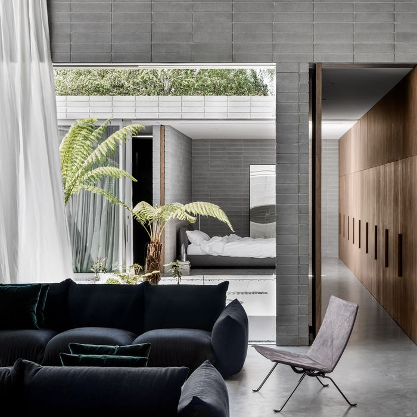

Dinding putih sederhana dan lantai kayu hitam akan memungkinkan berbagai jenis furnitur akan cocok pada ruangan yang satu ini. Untuk menampilkan kesan berbeda, sofa yang digunakan pada ruangan ini menggunakan slipcovers dengan detail bulu berwarna putih.
Menggabungkan dinding bercat putih dengan lantai beton dan material kayu di dalam rumah di tepian laut menciptakan latar belakang yang netral. Sentuhan kehangatan ditawarkan oleh potongan-potongan furnitur, seperti kursi kulit cokelat yang duduk di sudut dapur.
 Permukaan rumah Melbourne ini dilapisi dengan blok beton sederhana, yang kontras dengan kursi beludru yang digunakan. Tirai putih tipis dapat ditarik kembali untuk mengungkapkan taman halaman yang dihuni oleh tanaman asli seperti pakis pohon Australia. Jendela kaca yang lebar juga digunakan pada rumah ini. Kamar tidur utama terlihat langsung dari ruang keluarga.